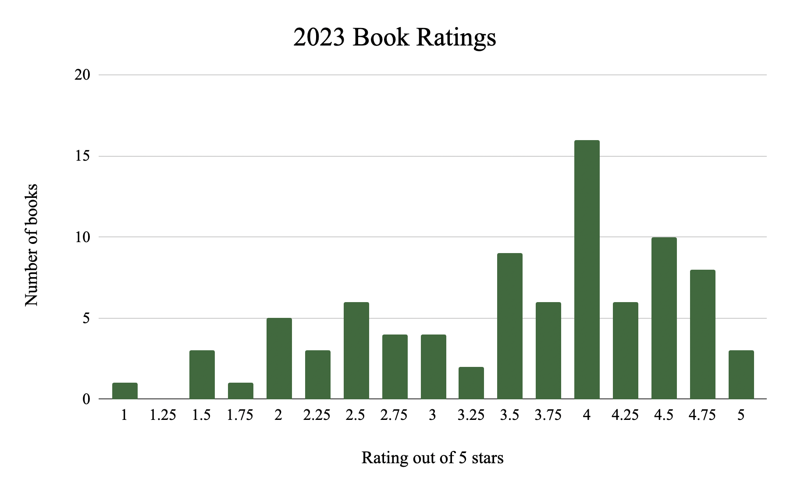

An instrumental version of "Love Song" by Lana Del Rey
"Love Song" is one of my favorite songs of all time, and there's something about the instrumental that really captivates me. You can read the lyrics here.
Jo's monologue from Greta Gerwig's "Little Women" is one of my favorite monologues I've ever seen performed. I am still shocked that Gerwig didn't win the Oscar for best adapted screenplay.

My favorite hobby is reading! It's what I spend most of my free time doing. Between majoring in English, reading for pleasure, and working at a bookstore, I read a lot of books. I use the website StoryGraph to track my reading, which is where I pulled this data from. The graph shows that the most common rating I gave was 4 stars, and the average rating was around 3.5 stars.